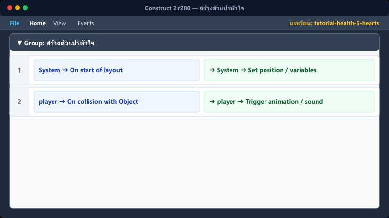
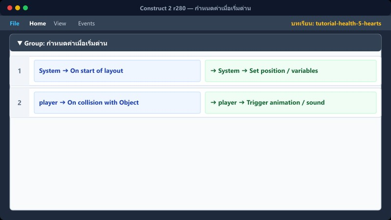
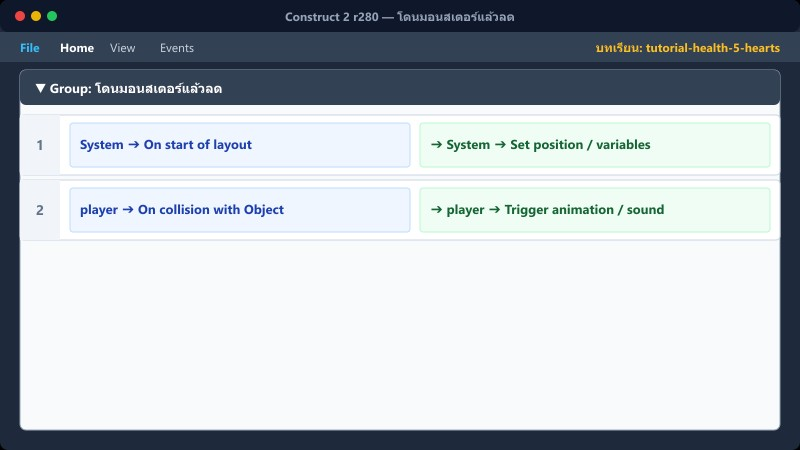
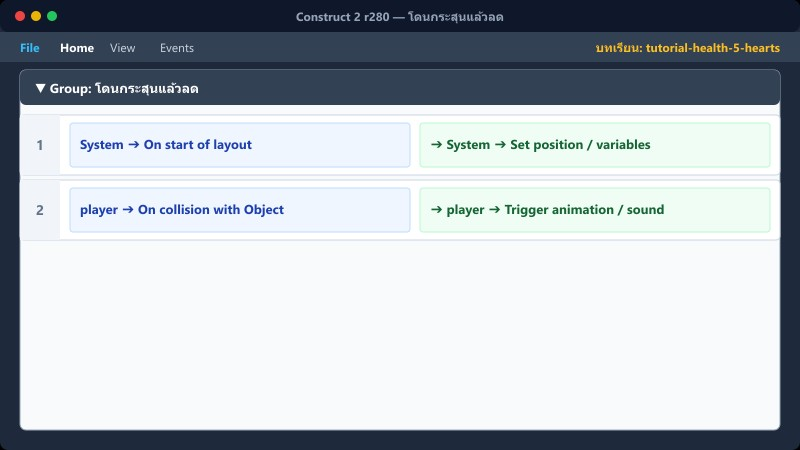
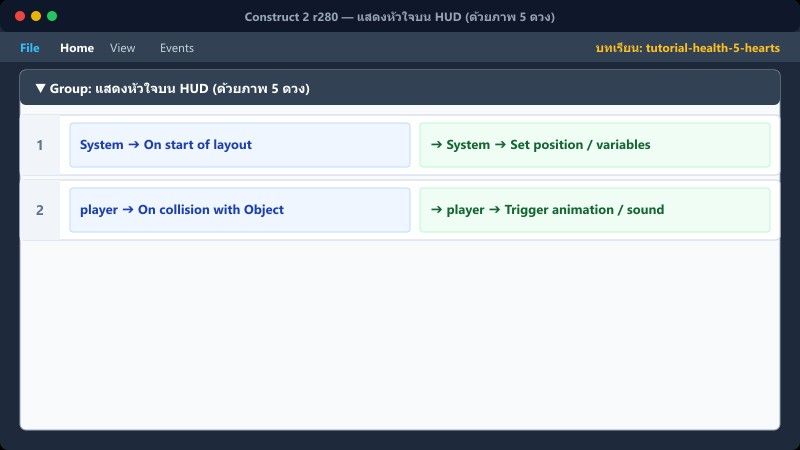
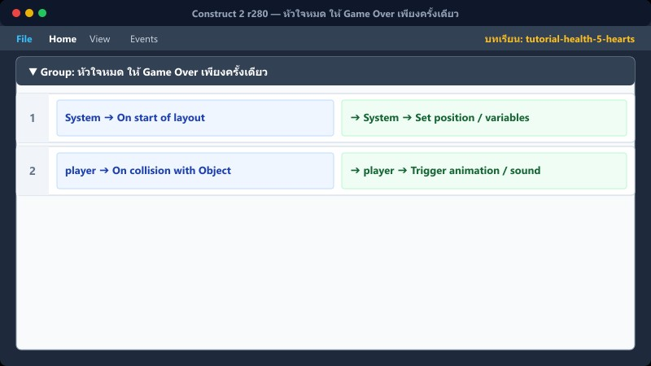
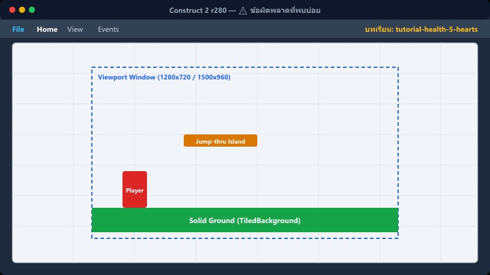

CONSTRUCT 2 • จับมือทำทีละขั้น
ระบบพลังชีวิต 5 หัวใจ และการควบคุม HUD
สร้างตัวแปร Global • ตรวจการชนศัตรู • ลดหัวใจ • แสดงภาพ HUD • ป้องกันเลือดหมด
❤️ ❤️ ❤️ ❤️ ❤️
🎮 Interactive Event Simulator (ทดลองกด Event Sheet สด):
ทดลองกดปุ่มด้านล่างเพื่อดูผลลัพธ์ของ Event Sheet ลด/เพิ่มหัวใจ และสถานะอมตะกระพริบ
สถานะ: ปกติ
เริ่มเกม 5
→
โดนโจมตี −1
→
อัปเดต HUD
→
เหลือ 0 = แพ้
1สร้างตัวแปรหัวใจ

คลิกขวาบน Event Sheet → Add global variable
ตั้งค่าตามนี้:
Name: หัวใจ
Type: Number
Initial value: 5
Description: จำนวนพลังชีวิต

ตัวแปรนี้จำจำนวนชีวิตที่ผู้เล่นเหลืออยู่
2กำหนดค่าเมื่อเริ่มด่าน

เพิ่ม Event เพื่อให้ทุกครั้งที่เริ่มด่านมีครบ 5 หัวใจ
1
System On start of layout
➔ System Set หัวใจ to 5
ถ้าต้องการให้หัวใจต่อเนื่องข้ามด่าน ให้ตัด Action นี้ออก
3โดนมอนสเตอร์แล้วลด

เพิ่ม Event การชน และใส่ Trigger once เพื่อไม่ให้หัวใจลดรัว
2
player On collision with monster
System Trigger once
➔ System Subtract 1 from หัวใจ
เพิ่ม Action: เล่นเสียง hurt และทำให้ผู้เล่นกระเด็นกลับได้
4โดนกระสุนแล้วลด

ใช้หลักเดียวกัน แล้วทำลายกระสุนทันทีหลังชน
3
player On collision with enemy_bullet
➔ System Subtract 1 from หัวใจ
➔ enemy_bullet Destroy
กระสุนหายหลังชน จึงไม่หักหัวใจซ้ำจากลูกเดิม
📍 ที่ไหนใน C2: game sheet → กลุ่ม "ระบบหัวใจ HUD"
5แสดงหัวใจบน HUD (ด้วยภาพ 5 ดวง)

วาง Sprite รูปหัวใจ 5 ดวงบน Layer HUD ตั้งชื่อว่า heart แล้วเพิ่ม Instance variable index (0 ถึง 4)
▼ Group: ระบบหัวใจ HUD
5
heart Compare instance variable: index < หัวใจ
➔ heart Set visible
6
heart Compare instance variable: index ≥ หัวใจ
➔ heart Set invisible
📍 ที่ไหนใน C2: Layout game → Layer HUD และ game sheet → กลุ่ม "ระบบหัวใจ HUD"
6หัวใจหมด ให้ Game Over เพียงครั้งเดียว

7
System Compare variable หัวใจ ≤ 0
System Trigger once while true
➔ System Go to layout "Game Over"
สำคัญ: ใช้เงื่อนไข ≤ 0 เผื่อค่าหัวใจต่ำกว่า 0 และใช้ Trigger once ป้องกันคำสั่งทำงานซ้ำ
📍 ที่ไหนใน C2: game sheet → กลุ่ม "ระบบหัวใจ HUD"
⚠️ ข้อผิดพลาดที่พบบ่อย

- ลืมตั้งค่า Layer HUD ให้ Parallax = 0, 0 ทำให้หัวใจเลื่อนหนีไปตามกล้อง
- ลืมตั้งค่า index ของหัวใจแต่ละดวง (ต้องเป็น 0, 1, 2, 3, 4 ตามลำดับจากซ้ายไปขวา)